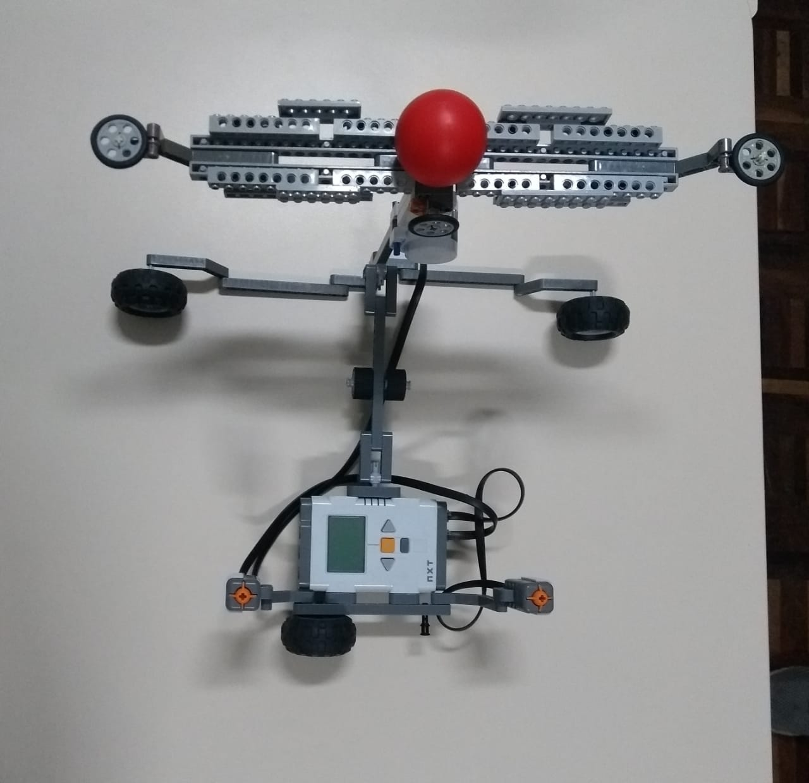

Neste jogo o competidor precisa deixar a “bolinha” no meio da plataforma. O jogo tem seu início com a bolinha no meio da rampa, e o jogador precisa fazer a bolinha tocar cada extremidade da plataforma duas vezes, uma vez no lado direito, depois no esquerdo e repetir a ação, para depois colocar a bolinha no meio novamente. O jogador pode derrubar apenas duas vezes a bolinha da rampa, caso caia uma terceira vez o jogo acaba.
